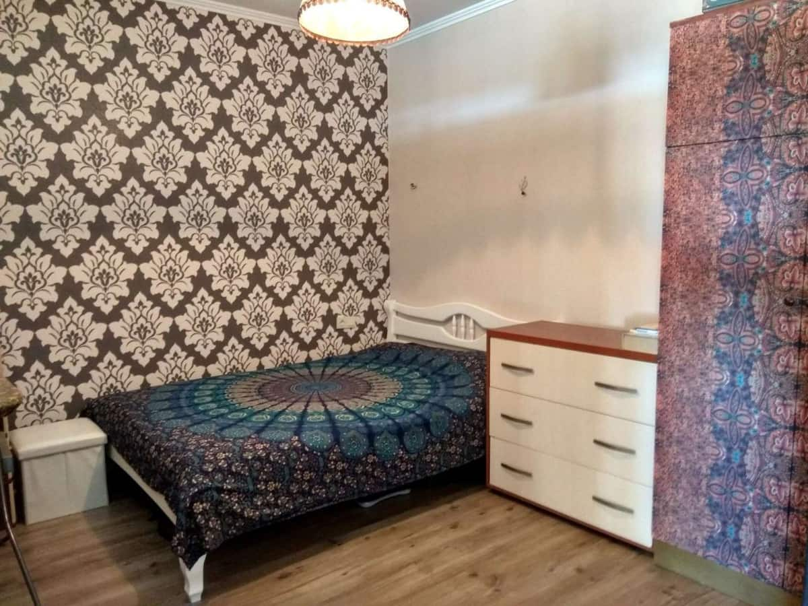
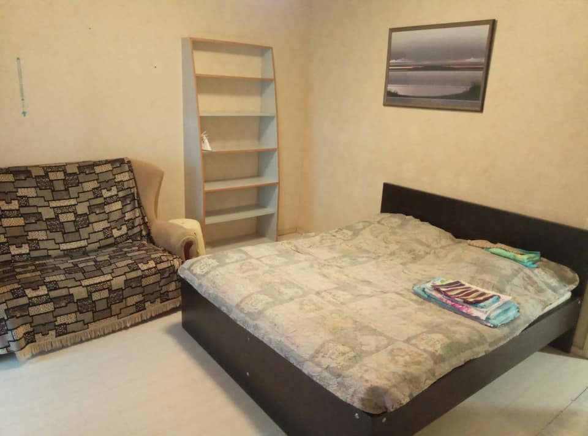

Квартира на море (Live by sea)
Квартира для приятного и комфортного отдыха в г.Черноморск (Ильичевск) квартира находиться на ул. Парусная 1-д Чистая и уютная квартира ,после ремонта для полноценного отдыха есть все Спальных мест max 4-6 Рядом с домом всевозможные супермаркеты, рынки, кафе, рестораны, удобная транспортная развязка В 700 м находиться море. Во дворе можно оставит свой автомобиль.
Забронировать...
Апартаменты у моря на 5 человек
Квартира для отдыха на море в г.Черноморск (Ильичевск) Квартира находиться на ул. Корабельная 5. Чистая и уютная квартира В числе удобств апартаментов телевизор, оборудованная кухня с обеденной зоной, ванная комната с душем, кухня с обеденной зоной, бойлер с горячей водой Рядом с домом супермаркеты, рынки, кафе, рестораны, удобная транспортная развязка В 600 м находиться море. Во дворе можно оставить свой автомобиль